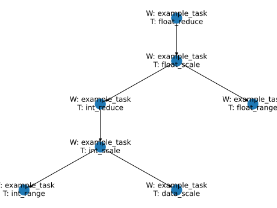

Assignment 1 (8 p.)
In this assignment you have to prepare your project workspace. In during semester, we will develop two projects: STEM framework and Super TEmperature Monitor.
(1 p.) Create git repository for your project on Github (or MIPT Gitlab, SCP Gitea), and send me link on repository. Merge top commit of main branch from this repository in your repository (You can clone this repository? but mos interesting task is the creation from local repository).
(1 p.) Create two directory (every directory used for single project:
stem_frameworkandtemperature_monitor, in both directory create python packagestemand filesetup.py.(1 p.) Create license for both projects.
Next tasks performed in project STEM framework (directory stem_framework).
(1 p.) Create file for deployment virtual enviroment (using
venv,virtualenvorcondaenv). Add command for deployment in projectREADME.md. Virtual environment must be contained package necessary for develop project (not project dependency), namely Sphinx, Pylint and MyPy.(1 p.) Fill
setup.pyfile for setupingstempackage in developer mode.(1 p.) Read paper DataForge: Modular platform for data storage and analysis.
(1 p.) Add next modules in
stempackage:core.py,meta.py,task.py,workspace.py. Add shortly module level docstring in modulesmeta.py,task.py,workspace.py. Inmeta.pydocstring describe conception of metadata and metadata processor. Intask.pydescribe task terms, inworkspace.pyconception modularity software.(1 p.) Create Sphinx documentation of
stempackage (include docstrings ofstempackage). Add to repository configs for build documentation. Make integration between sphinx andsetup.py, allow build documentation usingpython setup.py build_sphinx.
Assignment 2 (12 p.)
In this assignment you have to develop a metadata processor for the STEM Framework.
In the STEM, the task run includes three stage:
Resolving the task dependencies and building the task tree.
Metadata verification: each task has
Specificationwhich describes required meta and the metadata processor checks input meta the correspondence to the specification.The invocation of each task.
Meta is tree-like structure which contains key-value pairs on top level. The key is a string, the value is a primitive type, list or another Meta type. In the STEM we will use a dictionary and a dataclass as Meta objects.
Specification is description of mandatory part of the metadata which must be present in the Meta for the given task. The metadata processor checks whether the given meta corresponds specification before the execution of the task. In the STEM we use dataclass class-object if the dataclass instance is used as the Meta object and sequence of name-type pairs otherwise.
(1 p.) In
core.pymodule create a protocolDataclassas a type annotation for a dataclass object.(1 p.) In
meta.pymodule create a type annotation for the next types:Meta— union of thedictand theDataclasstype.Specification field type
SpecificationField— pairs of necessary meta key and necessary meta value type (this can be single type, tuple of types, or another specification if meta value is anotherMeta)Specificationfor specification — union of theDataclassor tuple of theSpecifiationFieldtype. Note: we can add additional type annotations if necessary.
(1 p.) In
meta.pymodule implement functionget_meta_attr(meta : Meta, key : str, default : Optional[Any] = None) -> Optional[Any]:which return meta value bykeyfrom top level ofmetaordefaultifkeydon’t exist inmeta.(1 p.) In
meta.pymodule implement functiondef update_meta(meta: Meta, **kwargs):which updatemetafromkwargs.(6 p.) In
meta.pymodule implement classMetaVerification— this class contains result of meta verification. It contains list of instance of dataclassMetaFieldErroror anotherMetaVerificationin the fielderrors:Implement property
checked_successthat returnsTrueif there is no errors of verification.Implement staticmethod
def verify(meta: Meta, specification: Optional[Specification] = None) -> "MetaVerification":which verifymetabyspecification. RaiseSpecificationErrorif verification impossible.
(2 p.) In
core.pymodule implement classNamedwith propertyname. This property returns value of private variable_nameif it is not None and returns name of current class (Namedor his children) in snake_case (for translation classname from PascalCase to snake_case implementdef pascal_case_to_snake_case(name: str) -> str:function).
Assignment 3 (8 p.)
In this assignment you have to implement API for STEM task creation.
(2 p.) In
task.pymodule implement decoratordata(func: Callable[[Meta], T], specification: Optional[Specification] = None, **settings) -> FunctionDataTask[T]which wrap user function asFunctionDataTaskobject. Name of wrapped function and wrapped function have to forward asnameandfuncarguments of theFunctionDataTaskconstructor. Argumentspecificationand keyword argumentssettingshave to forward asspecificationandsettingsarguments of theFunctionDataTaskconstructor. Decorator can be applied as@dataand as@data(...).(3 p.) In
task.pymodule implement decoratortask(func: Callable[[Meta, ...], T], specification: Optional[Specification] = None, **settings) -> FunctionTask[T]which wrap user function asFunctionTaskobject. Name of wrapped function and wrapped function have to forward asnameandfuncarguments of theFunctionTaskconstructor. Names of arguments of wrapped function (exclude argumentmeta) have to forward asdependenciesargument (astupleofstr) of theFunctionTaskconstructor. Argumentspecificationand keyword argumentssettingshave to forward asspecificationandsettingsarguments of theFunctionTaskconstructor. Decorator can be applied as@taskand as@task(...).(1 p.) In
task.pymodule implement classMapTaskwhich applyfuncfor each element of the iterated dependence. Propertynamehave to return the name of the dependence with the prefix"map_".(1 p.) In
task.pymodule implement classFilterTaskwhich filter iterated dependence usingkeyfunction. Propertynamehave to return the name of the dependence with the prefix"filter_".(1 p.) In
task.pymodule implement classReduceTaskwhich reduce iterated dependence usingfuncfunction. Propertynamehave to return the name of the dependence with the prefix"reduce_".
Assignment 4 (14 p.)
In this assignment you have to implement building the task tree and automatically dependence resolving.
In the STEM, tasks union in special workspaces (which implemented as children of interface IWorkspace and can have sub-workspaces). Also, tasks can be defined on module level and in this case, its implicitly union to special module-workspaces.
(8 p.) Implement metaclass
Workspace(ABCMeta, ILocalWorkspace):in moduleworkspace.py. This metaclass provides next features for user classes:The class-object itself must be returned on constructor call of user classes.
Class-objects of user classes implement the interface
ILocalWorkspace(see inheritance ofWorkspaceclass).All attributes (not methods) of the user workspace class, which inherit the class
Taskmust be replaced onProxyTaskobjects, using as attribute/method names as proxy names (The constructor of classProxyTaskreceive two arguments: some task object and it proxy name).All
ProxyTaskattributes and methods (which inherit the classTaskobjects) of the user workspace class must be accessible from propertytasks(Propertytasksreturn dictionary, which have names of tasks in keys and itself tasks in values).All tasks (
ProxyTaskattributes and task-methods) must have the attribute_stem_workspacewhich contain this workspace.Attribute
workspacesof the user workspace class must be converted to set if present else propertyworkspacesmust be return empty set (Propertyworkspacesreturn set contains sub-workspaces of this workspace). Note: Metaclass is black magic, we can ignore ordinary rules of object creation.
(2 p.) In module
workspace.py, in classIWorkspaceimplement methodfind_task(self, task_path: Union[str, TaskPath]) -> Optional[Task]which return task from this workspace or from his sub-workspaces.task_pathis specialTaskPathobject or string in next format: names of sub-workspaces (can be no one) and the name of task joined by".". Iftask_pathcontains only task name and task with this name absent in workspace should proceed search in sub-workspaces. ReturnNoneif task can’t be found.(3 p.) In module
workspace.py, in classIWorkspaceimplement staticmethodmodule_workspace(module: ModuleType) -> "IWorkspace"which return module-workspaces. Module-workspaces is the instance of the classLocalWorkspace, which contain tasks (instance of classTaskor its subclasses) and workspaces (instance of classIWorkspaceand its subclasses) defined in module associated with variablemodule. Module-workspace is contained in module variable__stem_workspaceif this variable exists, otherwise you should create it and store it in this variable.(1 p.) In module
workspace.py, in classIWorkspaceimplement staticmethodfind_default_workspace(task: Task) -> "IWorkspace". This method return_stem_workspacevalue if it exists and module-workspace for module which contains task definition.
Assignment 5 (16 (19) p.)
In this assignment you finish core part of the STEM. you have to unite all previous part and implement system of task execution.
For to start, let set rules of meta forwarding.
For example, consider next task tree:

And on the next example of meta:
{
"a" : 1,
"b" : 2,
"int_reduce" : {
}
"float_scale" : {
"int_reduce" : {
"aa" : 10,
"int_scale" : {
"bb" : 10,
}
}
}
"float_range" : {...}
}
In this example top-level metafields a, b , int_reduce forward to top-level task float_reduce, but metafields float_scale and float_range forward to children tasks float_scale and float_range respectively. Content of float_scale distributed in the same way.
(6 p.) In module
task_tree.pyimplement the methodresolve_node(self, task: Task[T], workspace: Optional[IWorkspace] = None) -> TaskNode[T]:of the classTaskTreeand propertiesdependencies,is_leaf,unresolved_dependenciesandhas_dependence_errorsof the classTaskNode. Instance ofTaskTreecontain tree of tasks and its dependencies (or of dependencies error). Instance ofTaskNodeis node of this tree. Methodresolve_nodeaccept the task and the workspace (optional ifworkspaceisNoneusing default workspace of the task) and returnTaskNodeinstance which contain the task andTaskNodeinstances for resolving dependencies (returned bydependeciesproperty), names of unresolving dependecies (returned byunresolved_dependenciesproperties). The propertyis_leafreturnTrueif the task doesn’t have dependencies. The propertyhas_dependence_errorsreturnTrueif current node or any child node (on any level) have unresolving dependence.(2 p.) In module
task_runner.pyimplement the methodrun(self, meta: Meta, task_node: TaskNode[T]) -> T:of the classSimpleRunner. This method run the methodtask_node.task.transformusing themetaargument and result of invocation of thetransformmethod fromtask_nodedependencies. Content of themetaargument distributed by defined rules.(3 p.) In module
task_master.pyimplement the methodexecute(self, meta: Meta, task: Task[T], workspace: Optional[Workspace] = None) -> TaskResult[T]:of the classTaskMaster. This method implement next algorithm:Get the
TaskNodeinstance for giventaskfrom existing or newtask_tree.The method returnTaskResultwithTaskStatus.DEPENDENCIES_ERRORif theTaskNodeinstance has dependencies error.Verify metadata give in
metaargument usingMetaVerification.verify. Content of themetaargument distributed between tasks by defined rules. If metadata errors is presented, should be returnTaskResultwithTaskStatus.META_ERRORandTaskMetaErrorinstance.Return
TaskResultwithTaskStatus.CONTAINS_DATAif dependencies or meta error is absent today. In argumentlazy_datamust be stored callable value which run invocation of the task in thetask_runner.
(4 p.) In module
cli_main.pywas be implmented CLI for task run, but dark wizardVolan-de-Mortdeleted code from git history. Fortunately, I save the help outputs of this CLI. Restore content ofcli_main.pyusing this outputs.
harry@hogwarts: python cli_main.py --help
usage: cli_main.py [-h] [-w WORKSPACE] command ...
Run task in workspace
positional arguments:
command
structure Print workspace structure
run Run task
options:
-h, --help show this help message and exit
-w WORKSPACE, --workspace WORKSPACE
Add path to workspace or file for module workspace
harry@hogwarts: python cli_utils.py structure --help
usage: cli_utils.py structure [-h]
options:
-h, --help show this help message and exit
harry@hogwarts: python cli_utils.py run --help
usage: cli_utils.py run [-h] [-m META] TASKPATH
positional arguments:
TASKPATH
options:
-h, --help show this help message and exit
-m META, --meta META Metadata for task or path to file with metadata in JSON format
(1 p.) Using
setup.py(ortomlfile) create console script for callstem.cli_main:stem_cli_mainfunction.(3* p.) (Optional task, for additional point) Add function for output task tree graph in image.
Assignment 7 (10 p.)
In this assignment you have to implement Dataforge Envelope — format for transmission messages contain meta-data and binary data.
(2 p.) In module
envelope.pyimplement the methoddefault(self, obj: Meta) -> Any:of the classMetaEncoder(JSONEncoder). ClassMetaEncodermust allow to serializeMeta objectto JSON format as encoder for modulejson.In module
envelope.pyimplement the classEnvelope- format for transferring data via byte stream. Description of format see below. If data size less thanEnvelope._MAX_SIZEstore data in the memory, otherwise on disk using memory mapping. Implement next methods for classEnvelope:(3 p.) staticmetod
read(input: BufferedReader) -> "Envelope"— createEnvelopeinstance from stream.(3 p.)
write_to(self, output: RawIOBase):— writeEnvelopeinstance to stream.(1 p.) staticmetod
from_bytes(buffer: bytes) -> "Envelope":createEnvelopeinstance from binary string.(1 p.)
to_bytes(self) -> bytes— convertEnvelopeinstance to binary string. Note: Use modulestructfor work with binary values.
Use next description of DataForge Envelope:
Tag .First 20 bytes of file or stream is reserved for envelope properties binary representation:
#~- two ASCII symbols, beginning of binary string.4 bytes - properties
typefield: envelope format type and version. For default format the stringDF02is used, but in principle other envelope types could use the same format.2 bytes - properties
metaTypefield: metadata encoding type.4 bytes - properties
metaLengthfield: metadata length in bytes including new lines and other separators.4 bytes - properties
dataLengthfield: the data length in bytes.~#- two ASCII symbols, end of binary string.\r\n- two bytes, new line. The values are read as binary and transformed into 4-byte unsigned tag codes (Big endian).
Metadata block. Metadata in any accepted format which length equal to
metaLengthproperties. In our implementation we will consider only JSON format.Data block. Any other binary data which length equal to
dataLengthproperties.
Assignment 8 (8 p.)
In this assignment will be asked to practice working with IO formats.
(4 p.) (Protobuf, Magic methods) Let the data in the binary file be stored as a set of records. The record has the following format:
The first 8 bytes contain a number N;
The next N bytes contain a message in the protobuf format (the message scheme is the same for all records). Implement a class
ProtoListin moduleproto_list.pythat allows you to work with a file as a list of protobuf messages (without loading all messages in memory). ClassProtoListmust open access to data in context manager, and close file on exit from context.
(4 p.) (HDF, ZIP) Implement script for conversion binary data from CAEN multy channel ADC to HDF5 file. Example of data located by link, in archive
wave.data.zip. Don’t extract data from archive: useZipFilesfor direct reading. In archive contains several files, each file is data from one channel of ADC. Every file contains set of entries. Entries in different files is synchronized (first entry in one file corresponds first entry in another file). Each entry contain 24-bytes header and 1024 float32 values. Convert ADC data to HDF5 Tables: index of row corresponds to number of event , index of column corresponds to number of channel. Item of table is 1024-sized array corresponds values from entry without header.
Assignment 9 (14 p.)
In this assignment you have to implement several inheritor of class TaskRunner.
(4 p.) Using module
threadingimplement classThreadingRunner, which execute every task in own thread. UseMAX_WORKERSclass field as maximum number of threads that can be used to execute.(4 p.) Using module
asyncioimplement classAsyncRunner, which execute every task in own coroutine.(6 p.) Using module
multyprocessingimplement classProcessingRunner, which execute every task in own process. UseMAX_WORKERSclass field as maximum number of processes that can be used to execute.
Assignment 10 (14 p.)
In this assignment you have to implement client and server side of remote workspace: create TCP server and handler allow send information about accessible tasks and run task in server workspace.
(6 p.) In module
remote.unit.pyimplement the classUnitHander(StreamRequestHandler)which have access to some workspace, task tree and task master. ClassUnitHandlerget user request in Dataforge Envelope (see assigment 7) and return answer also in envelope format. ClassUnitHandlermust be implement next protocol:In input request contains message in envelope format. In message metadata block contains entries with key
command. If input request don’t contain envelope message or envelope message don’t contain keycommandshould send envelope answer with next meta entries:Entry with key
statusand valuefailed.Entry with key
errorand value contains information about error (exception message as example)
If key
commandis presented in message, invoke next action and send result in envelope format:If
command="run", check entry with keytask_pathin metadata and if present run this task. Result of task executing return as envelope.If
command="structure", return envelope with workspace structure (use methodstructureof workspace).If
command="powerfullity", return envelope with meta entry ``powerfullity` which contains some number constant.
(1 p.) In module
remote.unit.pyimplement the methodstart_unit(workspace: IWorkspace, host: str, port: int, powerfullity: Optional[int] = None)which run TCP server able handle every request in own thread. For request handling use classUnitHander(StreamRequestHandler)from previous task.(1 p.) In module
remote.unit.pyimplement the methodstart_unit_in_subprocess(workspace: IWorkspace, host: str, port: int, powerfullity: Optional[int] = None) -> Process:which using methodstart_unitrun TCP server in children process.(4 p.) In module
remote.remote_workspace.pyimplement the classRemoteWorkspace(IWorkspace)which connect to remote TCP server implemented in task 1-2.(2 p.) In module
remote.remote_workspace.pyimplement the classRemoteTask(Task)which connect to remote TCP server implemented in task 1-2.
Assignment 11 (8 p.)
In this assignment you have to implement a middleware server which provide access to computation server and distribute tasks between their.
Implement next methods for class
Envelope:(1 p.)
async def async_read(reader: StreamReader) -> "Envelope":(1 p.)
async def async_write_to(self, writer: StreamWriter):
(4 p.) In module
remote.distributor.pyimplement the classDistributorwhich provide access to units server (see assigment 10) and another distributor servers. ClassDistributorget user request in Dataforge Envelope (see assigment 7) and return answer also in envelope format. ClassDistributormust be implemented next protocol:In input request contains message in envelope format. In message metadata block contains entries with key
command. If input request don’t contain envelope message or envelope message don’t contain keycommandshould send envelope answer with next meta entries:Entry with key
statusand valuefailed.Entry with key
errorand value contains information about error (exception message as example)
If key
commandis presented in message, invoke next action and send result in envelope format:If
command="run", check entry with keytask_pathin metadata and if present select random child server (with weight by powerfullity) and run this task on selected child server. Result of task executing return as envelope.If
command="structure", return envelope with workspace structure of child server.If
command="powerfullity", return envelope with meta entrypowerfullitywhich contains sum of child serverpowerfullity.
(1 p.) In module
remote.distributor.pyimplement the methodstart_distributor(host: str, port: int, servers: list[tuple[str, int]])which using moduleasynciorun asynchronous TCP server. For request handling use classDistributorfrom previous task.(1 p.) In module
remote.distributor.pyimplement the methodstart_distributor_in_subprocess(host: str, port: int, servers: list[tuple[str, int]]) -> Processwhich using methodstart_distributorrun TCP server in children process.
Assignment 12 (12 p.)
In this assignment you start develop of STEM: Serious TEmperature Monitor — application with GUI, which allow measure temperature using USB thermometer, save results in database and present graph of the temperature.
(1 p.) Add supportion on
with-context in the classdevice.Thermometer. On enter in context must be callopenmethod, on exitclosemethod.(2 p.) In the module
app.pyimplement the classRunButton(QPushButton)which represent a push button with two stateRunandStop. Click on the button change state. In stateRunbutton must be have labelRunand set background color to green. In stateStopbutton must be have labelStopand set background color to red. Information of change state write as debug message tologging.rootlogger.(2 p.) In the module
controller.pyimplement the classThermometerController(QObject)which using methodstart\stopturn on\off data collection fromdevice: Thermometer. After call ofstartmethod this class begin periodically (with periodconfig.period, using itself timer ofQObject) requests of data at the device and emit getting value to signalmeasurment.stopmethod stop its timer. Alsostartmethod pass debug message with temperature value tologging.rootlogger.(2 p.) In the module
app.pyimplement the classCentral(QWidget)which must be used as central widget of main window. Add on this widget button from first task. Connectcontroller : ThermometerControllerto button click: click in stateRunruncontroller.start, click in stateStopruncontroller.stop.(2 p.) In the module
app.pyimplement the classMain(QMainWindow)which represent main window of application. In this class setup window title"Serious TEmperature Monitor", add widget from previous task as central widget. Also usingQSettingssave last window size on exit and restore his by next run.(2 p.) Add to main window from previous task a dock widget (QDockWidget), which contain text output (QTextEditor). Connect this text output with
logging.rootlogger (usingLoggerHandler). Add to main window toolbar action which hide/show this dock.(1 p.) In the module
app.pyimplement therunmethod and create insetup.py/.tomlentry point for run this method as console script.
Assignment 13 (8 p.)
In this assignment you continue to develop of STEM: Serious TEmperature Monitor — application with GUI, which allow measure temperature using USB thermometer, save results in database and present graph of the temperature.
(6+2 p.) In the module
app.pyimplement the classOscilloscope(QWidget)with view two graph: line plot with dependency temperature from time and histogram of measured temperature values. Connect oscilloscope toThermometerControllerand update graph on every new measurement (ranges of y-axis must be setup dynamically) (6 p.). Line plot must be view data from lastOscilloscope.Npoints (ranges of x-axis of line plot must be setup dynamically). For every graph add axis labels, plot grid and secondary Y axis on right side of graphs (2 p.). Add oscilloscope widget to central windget of application.
Assignment 14 (12 p.)
In this assignment you continue to develop of STEM: Serious TEmperature Monitor — application with GUI, which allow measure temperature using USB thermometer, save results in database and present graph of the temperature.
(2 p.) In the module
config.pyimplement the functionfrom_dict(data: dict, factory: Type[T]) -> Twhich create dataclass instance of typefactory(guaranteed whatfactoryis dataclass type) from dict in take to account what typefactorycan be has another dataclass as field and its also can be created from nested dictionary entry.(2 p.) In the module
config.pyimplement the functionresolve_config(factory: Type[T], user_path: Union[str,Path], default_path : Union[str,Path]) -> Twhich create dataclass instance of typefactory(guaranteed whatfactoryis dataclass type) from user/default config in YAML format (seeconfig.yaml) by next algorithm:If
user_pathpath exist than created from it.If
user_pathpath don’t exist than checkdafult_pathpath.If
default_pathpath exist than created from it.If
default_pathpath don’t exist than created dataclass with default field (its garuanted) and save this config todefault_pathin YAML format.
(1 p.) In the module
app.pyfixe the call ofresolve_configin the functionrun. Add asdefault_pathpath to default user system directory for application config (used moduleappdirs, application name isSTEM, application author is you username).(1 p.) In the module
database.pyimplement the classPointwhich describe table with two columns: temperature value and time of measurement (database usually have special types for datetime data).(4 p.) In the module
database.pyimplement the classDatabasewith next methods:add_point(self, point: Point)— insert point to database.get_points(self, from_date: datetime) -> list[Point]— get list of point from given date.staticmethod
create_or_connect_sqlite(config: SqliteConfig) -> "Database"create ofDatabaseinstance with connect (or create and connect) to sqlite database with parameters fromconfig.__init__(self, engine: Engine):— create the tablePointin databaseengine
(2 p.) Connect
Databaseinstance fromrunfunction to your application: autosave measured temperature and time of measurement in database, as well as on application start load on plot all points from last 15 minutes.
Assignment 15 (10 p.)
In this assignment you finish to develop of STEM: Serious TEmperature Monitor — application with GUI, which allow measure temperature using USB thermometer, save results in database and present graph of the temperature.
(10 p.) In the module
usb.pyresolve allTODO(using protocol from RODOS_5_protocol.md) and nextly in the moduledevice.pyimplement the classUSBThermometerusingRODOS56class
USB-термометр RODOS-5
Для подачи команды на термометр:
Ему передается буфер из девяти байт.
Ожидаем некоторое время (таймаут).
Считываем ответный буффер из девяти байт.
Проверяем корректность ответа.
Правила заполнения буфера (для основных команд):
Нулевой байт всегда равен нулю
Неиспользуемые байты в конце буффера равны нулю
Первый и второй байт задают команду
Начиная с третьего байта идут пользовательские данные/выходные данные термометра
Проверка корректности считывания:
Первые три байта выходного буфера должны быть равны первым трём байтам входного
Описание команд:
Команда |
первый/второй байт |
таймаут |
Куда записываются пользовательские данные |
Как парсить ответ |
|---|---|---|---|---|
RESET |
|
10 ms |
||
Записать один бит |
|
5 ms |
в третий байт буфера, надо передать байт у которого все биты кроме первого равны нулю |
третий байт равен переданному |
Записать один байт |
|
5 ms |
надо передать байт в третий байт буфера |
третий байт равен переданному |
Записать четыре байта |
|
5 ms |
Передаваемые байты надо записать с 3 по 7 позицию буффера |
3-7 байты выходного буфера равны переданным |
Прочитать 2 бита |
|
5 ms |
В 3-4 позицию буфера надо записать |
3-4 байты выходного буфера в первом бите содержат необходимые занчения |
Прочитать один байт |
|
5 ms |
В 3 байт надо записать |
В 3 позиции выходного буфера будет считанный байт |
Прочитать четыре байта |
|
30 ms |
В 3-7 байты надо записать |
В 3-7 позиции выходного буфера будет считанные байты |
Получить ID устройства |
|
5ms |
Последние четыре байта, безнаковое целое в big-endian |